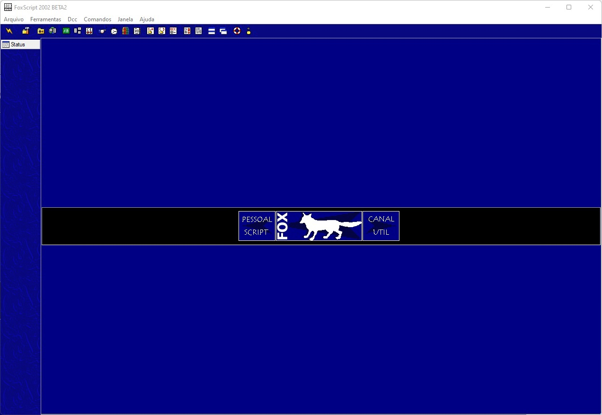

Fox Script 2002 Beta 2
Um dos scripts mais completos em funcionalidades (desde ferramentais pro dia a dia a jogos e diversão pelo mIRC)

Novidades:
- Mp3 Player
- Buscador de Mp3
- Navegador
- GamaGame - Jogo de canal pra voce divertir seus amigos
- Dialogsn do nickserv e chanserv
- Correção do bug de nicks em PVT
- Ignorar PVT - opção para voce ignorar todos pvts caso queira
- Janela de onotice e globops com lista de nicks
- Mp3 System - Sistema que toca mp3 no proprio mirc
- Agent - Suporte ao Microsoft Agent
- Telnet - Voce pode abrir telnet dentro do proprio mirc
- Alerta 6 horas - Te manda um aviso antes das 6 horas da manha para você nao se esquecer que depois desse horario os impulsos ficam mais caros
- Anti-spam - Ignora os pvts com propagandas automaticamente, dando opcoes de kick kickban e kill para usuarios avancados
- Desligar Windows - o script vai desligar o seu windows na hora que vc determinar
- Possui um sistema que faz o mirc usar portas altas e variadas no cliente para não cair com nukes.
- Despertador - Te desperta tocando sons para compromissos importantes com a mensagem que vc configurar
- Tradutor - Chat com o <Tradutor>, ele traduz instantâneamente via Internet 6 idiomas: inglês, português, espanhol, francês, alemão e italiano
- Whiteboard - Permite você desenhar no mIRC junto com até 5 pessoas pela Internet
- TicTacToe - jogue jogo da velha com seus amigos pela internet
- PuyoPuyo - jogo tipo tetris bastante conhecido para voce jogar com seus amigos pela internet ou sozinho
veja mais
- Lag Test - Testa seu lag com o servidor com 3 digitos em decimais
- Sistema de Away - Permite ficar away notificando a todos e trocando seu nick
- Fserver - Compartilhe algum diretório do seu HD com a galera, tem o sistema de !comando, propaganda etc
- Detector de Netsplit - Detecta servidores que se desconectaram da rede
- Log Viewer - Visualize seus logos coloridos e faça a manuntencao deles no seu proprio mirc
- Arquivos - Visualize arquivos dentro do proprio mIRC, logs, txts, bmps, ouça soms .wav e .mid, etc
- Localizar Ircops - Localiza os ircops da rede
- Completação de nick - completa nicks nos comandos de /op /deop /voice /kick etc, alem de completar nicks em suas mensagens quando se usa : ou , ao final
- Seen - Grava informações de joins parts quits kicks de todo mundo, e os mostra quando alguem digita !seen nick
- Proteções de op - Antikick, Antiban, Antideop, Joinban
- Proteções pessoais - Antitsunami, Antiinvite, CtcpProtection, AntiOOB
- Ctcps - Desative/Ative seus ctcps reply, e configure seu version reply
- Proteções de canal - linesflood, byteslfood, repeticao, ctcpflood, tsunami, capslock, muitacor, negrito, sublinhado, propaganda de canal, propaganda de url, palavrao, clone, ascii
- Services BOTs- TODOS comandos para os services (nickserv, chanserv, memoserv) da Brasnet e Brasirc
- Frases - varios tipos de frazes, taglines, declarações, cantadas, sexo, taglines, bebidas, piadas, efeitos, desenhos ascii
- Popup inteligente - os comandos só serão vistos quando eles estiverem disponíveis para a execução
- Remote inteligente - quando um remote nao está sendo usado o script o descarrega, e o carrega quando for necessario
- Nova Versão - o script lhe informará sobre o lançamento de uma nova versao do script
- Recuperacao de dados de versão anterior - Você nao perderá seu notify list, senhas com o nickserv, etc, da sua versão anterior
- Autocor - colore suas frases, voce pode configurar as cores da letra, as cores do fundo, o que quizer colocar na frente e o que quizer colocar depois
- Corretor Ortográfico - corrige seus erros mais comuns de portugues, permite editar o dicionario, acrescentar novas correções
- Nicklist Colorido - Configura as cores da sua lista de nicks dos canais
- Whois - vc pode configurar para aparecer no status, ou na janela ativa
- Auto-join - entra em seus canais preferidos automaticamente
- Automsg e Autonotice - configura msg de boas vindas ou despedidas para usuarios que entrarem e partirem de todos canais, ou de um canal especifico
- Auto get Sound - permite autopegar somns que voce nao tiver, permite tambem o modo manual para isso
- Onotice Window - faça sua reuniao de @ em um onotice window ...=]
- Eggdrop - simule que voce é um eggdrop para seus amigos
- Skins - permite trocar os sons cores do script todo
- Votação - faça uma votação em ctcp no canal
- Bugban - seus bans das protecoes e de kickbans sao bugosos para o chanserv, o comando /chanserv unban nao funciona neles... :P
- Super ban duplo - bane com 2 tipos diferentes de masks
- /comandos inteligentes - pra quem nao gosta de usar o mouse é uma boa
- Teclas de atalho de facil acesso
- Mass invite - Invite todos nicks selecionados logo de uma vez :)
- Comandos de operador de canal no pvt , para facilitar, esses comandos será aplicatdo em todos canais que voce for operador
- Menu de ajuda para ajudar seus amigos com a respeito sobre nickserv chanserv memoserv
- Comandos de IRCop, se voce é um, esse é o script feito pra voce:)
- Janelas de Globops, wallops, kills, links, etc
- Protecao contra mass kick deop topic join nick mode etc
- Protecao contra split (ban dado pelo servidor)
- Opcao pra Kick automatico em bans
- Dialog pra facilitar o uso do Iparty
- Lista de auto-voice (dá voice pra pessoa que estiver na lista)
- ShitList (bane automaticamente a pessoa que estiver na lista)
- Executavel do mirc em portugues compactado
- Raws Bde servidor em portugues
- Menus feito em dialogs para facilitar as configurações
- Etc
- É muita coisa!! =)
veja menos